Overview
This article will demonstrate each wrapper function.
library(dplyr)
library(ggplot2)
library(scales)
library(ggblanket)
library(palmerpenguins)
set_blanket(
mode = dark_mode_r(),
text_colour = darkness[1],
reference_line_colour = darkness[1],
col_palette_d = c(teal, orange, purple, red, pink, navy),
col_palette_c = viridis::mako(n = 9),
col_palette_o = scales::pal_viridis(option = "G"),
)
penguins2 <- penguins |>
labelled::set_variable_labels(
bill_length_mm = "Bill length (mm)",
bill_depth_mm = "Bill depth (mm)",
flipper_length_mm = "Flipper length (mm)",
body_mass_g = "Body mass (g)",
) |>
mutate(sex = factor(sex, labels = c("Female", "Male"))) |>
tidyr::drop_na(sex)
experiment <- data.frame(
trt = factor(c(1, 1, 2, 2)),
resp = c(1, 5, 3, 4),
group = factor(c(1, 2, 1, 2)),
upper = c(1.1, 5.3, 3.3, 4.2),
lower = c(0.8, 4.6, 2.4, 3.6)) |>
labelled::set_variable_labels(
trt = "Treatment",
resp = "Response"
)gg_bar
penguins2 |>
gg_bar(
position = position_dodge(preserve = "single"),
y = species,
col = sex,
width = 0.75,
)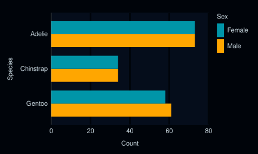
gg_bin_2d
diamonds |>
gg_bin_2d(
x = carat,
y = price,
)gg_col
penguins2 |>
group_by(sex, species) |>
summarise(across(flipper_length_mm, \(x) mean(x, na.rm = TRUE))) |>
labelled::copy_labels_from(penguins2) |>
gg_col(
position = position_dodge(preserve = "single"),
x = flipper_length_mm,
y = species,
col = sex,
width = 0.75,
)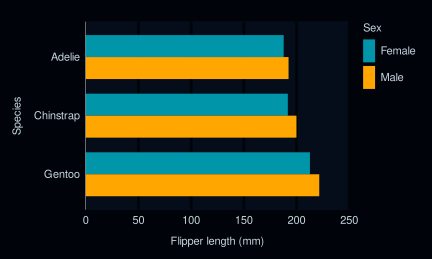
gg_contour_filled
faithfuld |>
gg_contour_filled(
x = waiting,
y = eruptions,
z = density,
bins = 8,
)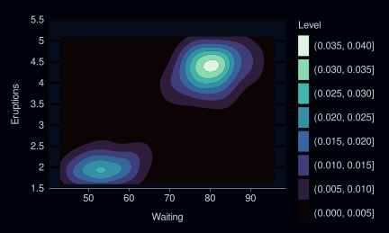
gg_crossbar
experiment |>
gg_crossbar(
x = trt,
y = resp,
ymin = lower,
ymax = upper,
col = group,
width = 0.5,
y_expand_limits = 0,
)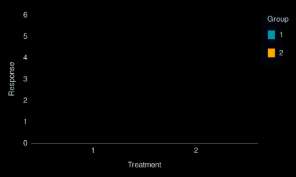
gg_density
penguins2 |>
gg_density(
x = flipper_length_mm,
col = species,
col_palette = c(teal, orange, pink),
blend = "multiply",
)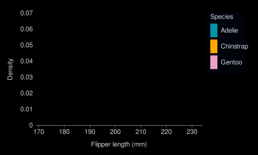
gg_density_2d
faithful |>
gg_density_2d(
x = waiting,
y = eruptions,
bins = 8,
contour = TRUE,
)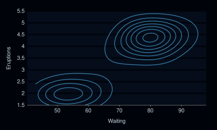
gg_density_2d_filled
faithful |>
gg_density_2d_filled(
x = waiting,
y = eruptions,
bins = 8,
contour = TRUE,
)gg_errorbar
experiment |>
gg_errorbar(
x = trt,
ymin = lower,
ymax = upper,
col = group,
y_label = "Response",
width = 0.1,
y_expand_limits = 0,
)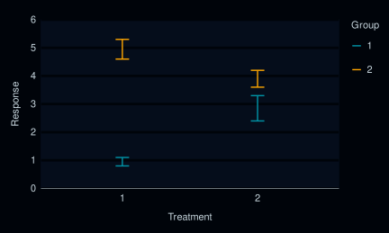
gg_freqpoly
penguins2 |>
gg_freqpoly(
x = flipper_length_mm,
col = sex,
mode = dark_mode_t(),
) +
theme(legend.title = element_blank())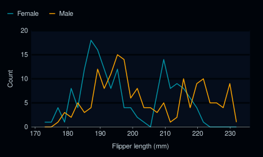
gg_function
gg_function(
fun = \(x) dnorm(x, mean = 0, sd = 5),
x_expand_limits = qnorm(p = c(0.005, 0.995), mean = 0, sd = 5),
x_label = "X",
y_expand_limits = 0,
)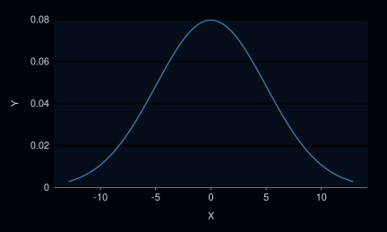
gg_hex
diamonds |>
gg_hex(
x = carat,
y = price,
)gg_histogram
penguins2 |>
gg_histogram(
x = flipper_length_mm,
col = sex,
facet = species,
bins = 50,
mode = dark_mode_t(),
) +
theme(legend.title = element_blank())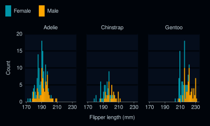
gg_jitter
set.seed(123)
penguins2 |>
gg_jitter(
position = position_jitter(),
x = species,
y = body_mass_g,
col = flipper_length_mm,
y_expand_limits = 0,
col_steps = TRUE,
)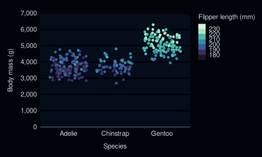
gg_label
bind_rows(
mtcars |> slice_min(order_by = mpg),
mtcars |> slice_max(order_by = mpg)) |>
tibble::rownames_to_column("model") |>
gg_label(
x = model,
y = mpg,
col = mpg,
label = model,
y_expand_limits = 0,
y_label = "Miles per gallon",
col_palette = c(orange, "white", teal),
)
gg_line
economics |>
gg_line(
x = date,
y = unemploy,
y_expand_limits = 0,
y_label = "Unemployment",
)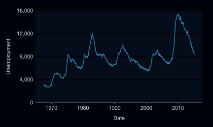
gg_lineribbon
data.frame(year = 1875:1972, level = as.vector(LakeHuron)) |>
mutate(level_min = level - 1, level_max = level + 1) |>
gg_lineribbon(
x = year,
y = level,
ymin = level_min,
ymax = level_max,
x_labels = \(x) x,
blend = "multiply",
)
gg_linerange
experiment |>
gg_linerange(
position = position_dodge(width = 0.2),
x = trt,
ymin = lower,
ymax = upper,
col = group,
y_label = "Response",
y_expand_limits = 0,
)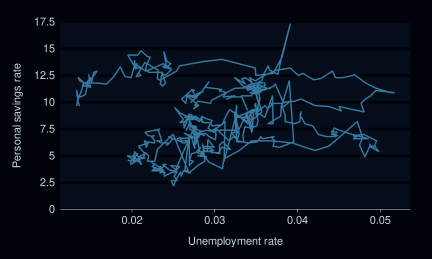
gg_path
economics |>
mutate(unemploy_rate = unemploy / pop) |>
gg_path(
x = unemploy_rate,
y = psavert,
x_label = "Unemployment rate",
y_expand_limits = 0,
y_label = "Personal savings rate",
)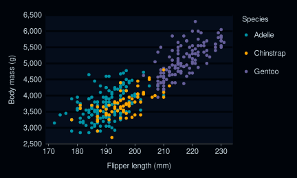
gg_pointrange
experiment |>
gg_pointrange(
position = position_dodge(width = 0.2),
x = trt,
y = resp,
col = group,
ymin = lower,
ymax = upper,
y_expand_limits = 0,
)gg_polygon
ids <- factor(c("1.1", "2.1", "1.2", "2.2", "1.3", "2.3"))
values <- data.frame(
id = ids,
value = c(3, 3.1, 3.1, 3.2, 3.15, 3.5)
)
positions <- data.frame(
id = rep(ids, each = 4),
x = c(2, 1, 1.1, 2.2, 1, 0, 0.3, 1.1, 2.2, 1.1, 1.2, 2.5, 1.1, 0.3,
0.5, 1.2, 2.5, 1.2, 1.3, 2.7, 1.2, 0.5, 0.6, 1.3),
y = c(-0.5, 0, 1, 0.5, 0, 0.5, 1.5, 1, 0.5, 1, 2.1, 1.7, 1, 1.5,
2.2, 2.1, 1.7, 2.1, 3.2, 2.8, 2.1, 2.2, 3.3, 3.2)
)
datapoly <- merge(values, positions, by = c("id"))
datapoly |>
gg_polygon(
x = x,
y = y,
col = value,
group = id,
)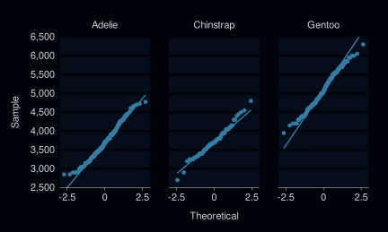
gg_qq
penguins2 |>
gg_qq(
sample = body_mass_g,
facet = species,
coord = coord_cartesian(clip = "on"),
) +
geom_qq_line()gg_quantile
penguins2 |>
gg_quantile(
x = flipper_length_mm,
y = body_mass_g,
)gg_rect
data.frame(
x = rep(c(2, 5, 7, 9, 12), 2),
y = rep(c(1, 2), each = 5),
z = factor(c(rep(1:4, each = 2), 5, NA)),
w = rep(diff(c(0, 4, 6, 8, 10, 14)), 2)) |>
mutate(
xmin = x - w / 2,
xmax = x + w / 2,
ymin = y,
ymax = y + 1
) |>
gg_rect(
xmin = xmin,
xmax = xmax,
ymin = ymin,
ymax = ymax,
col = z,
)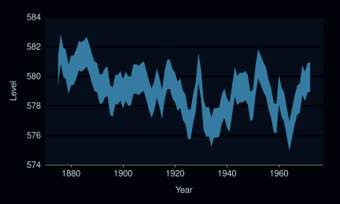
gg_ribbon
data.frame(year = 1875:1972, level = as.vector(LakeHuron)) |>
mutate(level_min = level - 1, level_max = level + 1) |>
gg_ribbon(
x = year,
ymin = level_min,
ymax = level_max,
x_labels = \(x) x,
y_label = "Level",
) 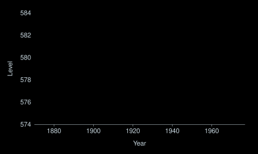
gg_segment
data.frame(x1 = 2.62, x2 = 3.57, y1 = 21.0, y2 = 15.0) |>
gg_segment(
x = x1,
xend = x2,
y = y1,
yend = y2,
)
gg_sf
sf::st_read(system.file("shape/nc.shp", package = "sf")) |>
gg_sf(
col = AREA,
)
#> Reading layer `nc' from data source
#> `/home/runner/work/_temp/Library/sf/shape/nc.shp' using driver `ESRI Shapefile'
#> Simple feature collection with 100 features and 14 fields
#> Geometry type: MULTIPOLYGON
#> Dimension: XY
#> Bounding box: xmin: -84.32385 ymin: 33.88199 xmax: -75.45698 ymax: 36.58965
#> Geodetic CRS: NAD27gg_smooth
penguins2 |>
gg_smooth(
x = flipper_length_mm,
y = body_mass_g,
col = sex,
blend = "multiply",
se = TRUE,
)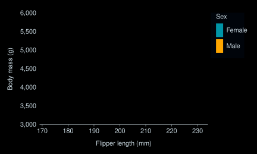
gg_step
economics |>
filter(date > lubridate::ymd("2010-01-01")) |>
gg_step(
x = date,
y = unemploy,
y_expand_limits = 0,
y_label = "Unemployment",
)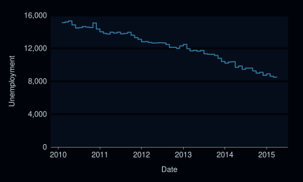
gg_text
bind_rows(
mtcars |> slice_min(order_by = mpg),
mtcars |> slice_max(order_by = mpg)) |>
tibble::rownames_to_column("model") |>
gg_text(
x = model,
y = mpg,
col = mpg,
label = model,
y_expand_limits = 0,
y_label = "Miles per gallon",
col_palette = c(orange, "white", teal),
)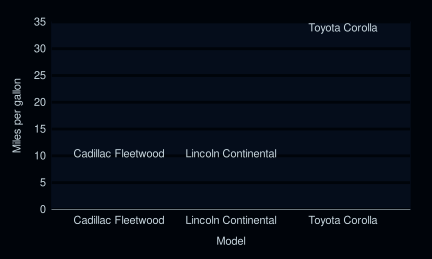
gg_tile
penguins2 |>
group_by(species, sex) |>
summarise(flipper_length_mm = mean(flipper_length_mm, na.rm = TRUE)) |>
labelled::copy_labels_from(penguins2) |>
gg_tile(
x = sex,
y = species,
col = flipper_length_mm,
)gg_violin
penguins2 |>
gg_violin(
x = sex,
y = body_mass_g,
col = species,
)gg_blanket
penguins2 |>
gg_blanket(
geom = "violin",
stat = "ydensity",
position = "dodge",
x = sex,
y = body_mass_g,
col = species,
)